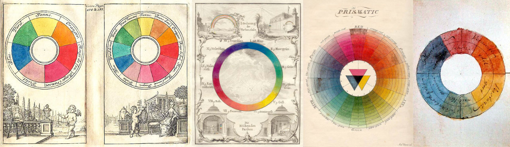

I lub CSS. And I lub colours.
And you all dun wanna speak at Talk.CSS.
You tell me how???
I wrote a thing last year.
Where did CSS named colours come from?You should read this thing to hear from a professional.
Ask an expert: Why is CSS…the way it is?
Perceived according to the wavelength of the light which strikes the eye
General diagram, individual profiles will vary
The resultant set of colours when a colour model is associated with a precise description of how components are to be interpreted
Concept seems to have been developed by Hermann Grassmann
Grassmann published his theory of how colours mix in 1853
Colour can be represented as a convex cone in the 3D linear space
The portion of the colour space that can be represented or reproduced
Generally specified on the hue-saturation plane
When a colour cannot be expressed within a particular colour model, it is out of gamut
English translation of Theorie der Pigmente von grösster Leuchtkraft by Erwin Schrödinger
As of now, a device that can reproduce the entire visible colour space remains an unrealised goal within the engineering of colour displays and printing processes
An objective specification of the quality of a colour regardless of its luminance
Consists of two independent parameters, often specified as hue (h) and colourfulness (s)
Allows for representation via polar coordinates with respect to a white point of a display
Light is either

For colour creation in printing and film
Uses the subtractive primary colours of pigment (Cyan, Magenta, Yellow, Key (black))
Magenta on the X-axis, Cyan on the Y-axis, Yellow on the Z-axis
Starts with white, and variable amounts of dye subtracts some colours from light leaving others, cyan absorbs red, magenta absorbs green, yellow absorbs blue
All light-emitting displays would use an additive colour model
RGB is device-dependent, thus an RGB value will not define the same colour across devices without some kind of colour management
A colour is expressed by indicating how much of each of the red, green, and blue is included in numerical terms
For computers, component values are stored as integer values ranging from 0 to 255, which is the range an 8-bit byte can offer
5.3 Color and background properties
color to describe the text colour of an element
background-color to describe the background colour of an element
Colour can either be a keyword or a numerical RGB specification
Hex codes are simply RGB colours in the hexadecimal notation
transparentWas there from the beginning and is the initial value of background-color
CSS2 allowed its use in border-color
CSS3 allowed its use in all elements that accepted a colour value
Computes to rgba(0, 0, 0, 0)
sRGB (standard Red Green Blue) is an RGB color space created by HP and Microsoft for monitors, printers and the Web
Original document: A Standard Default Color Space for the Internet - sRGB
Colours in CSS were first specified in RGB
Even though there were better systems, RGB was “good enough” at the time
A systematic notation for named colours for computer applications using English terms created by Berk, Brownston and Kaufman in 1982
Uses ten colour names: red, orange, brown, yellow, green, blue, purple, white, grey and black
Base colour names can be combined or prefixed with modifiers
5 lightness terms, 4 saturation terms and 31 hue terms combine to produce 620 chromatic colour names
Not meant for computation, rather, a mechanism for naming colour literals and constants
named-color := gray-color | chromatic-color
gray-color := 'black' | 'white' | lightness gray
gray := 'gray' | 'grey'
chromatic-color := [ tint | shade ] hue | [ lightness || saturation ]? hue
tint := 'whitish' | 'pale' | 'brilliant' | 'vivid'
shade := 'blackish' | 'dim' | 'deep' | 'vivid'
saturation := 'grayish' | 'moderate' | 'strong' | 'vivid'
lightness := 'moderate' | 'very'? [ 'dark' | 'light' ]
hue := splash-color? base-color | base-color '-' base-color
base-color := 'red' | 'orange' | 'brown' | 'yellow' | 'green' | 'blue' | 'purple'
splash-color := 'reddish' | 'orangish' | 'brownish' | 'yellowish' | 'greenish' | 'bluish' | 'purplish'Based on the X11 colours
Supported in Mosaic and Netscape Navigator because both ran in X Windows System
Chris Lilley lost the fight to use names from the Colour Naming System (CNS)
The path of least resistance was chosen ¯\_(ツ)_/¯
An abstract illustrative organisation of colour hues around a circle to show the relationships between them
Created by Professor Albert H. Munsell
A colour space that specifies colours based on three properties of colour: hue, chroma and value
The first system which separated hue, value and chroma into perceptually uniform and independent dimensions
Munsell was the first person to illustrate colours systematically in three-dimensional space
Defined by the International Commission on Illumination (CIE) in 1976
Also known as LAB, for lightness, green/red and blue/yellow respectively
CIELAB gamut includes both the gamuts for RGB and CMYK
Meant to approximate human vision and aspires to perceptual uniformity
Needed more data per pixel to obtain the same precision as RGB or CMYK
An alternative representation of the RGB colour model, utilising a cylindrical geometry, hue being the angular dimension, saturation along the radial direction and lightness from top to bottom
Based on the organisation and conceptualisation of colours in human vision
Conversion from RGB was fast enough to run in real time on 1970s hardware
HSL was added to CSS in 2002 from the desire to have some sort of hue wheel system
Fast forward to today, its disadvantages (non-perceptual uniformity being a key one) are flaring their head
Hue is unitless as degrees is implicit, Saturation and Lightness are in percentages
HWB colours (hue, whiteness, blackness)
Lab colours (lightness, green/red (a-axis), blue/yellow (b-axis))
LCH colours (lightness, chroma, hue)
gray() function


color-mix()
mix-color(peru lightgoldenrod 40%)color-contrast()
color-contrast(purple, chartreuse, firebrick, ghostwhite)
/* ghostwhite wins with a ratio of 8.9 */color-adjust()
color-adjust(darkslategrey lightness(-20%));